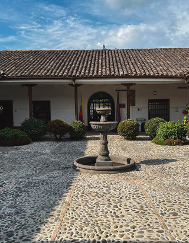
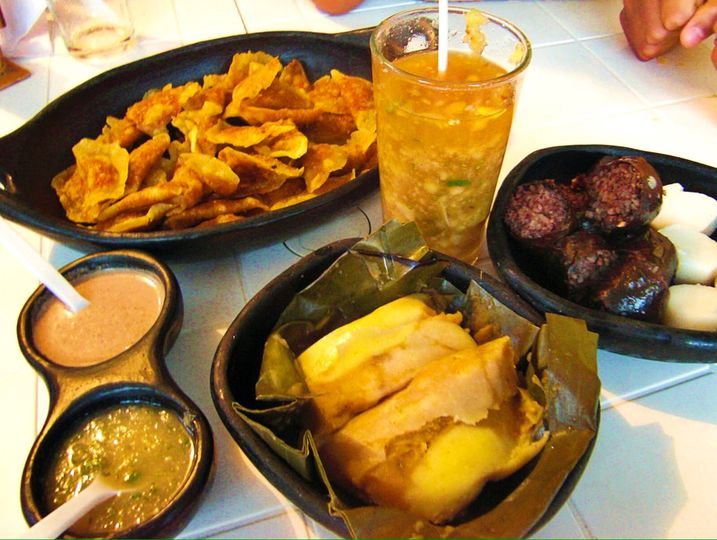
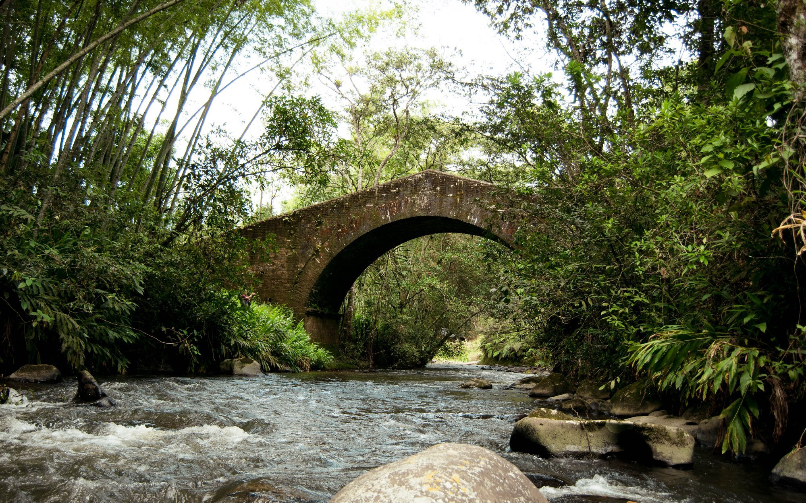
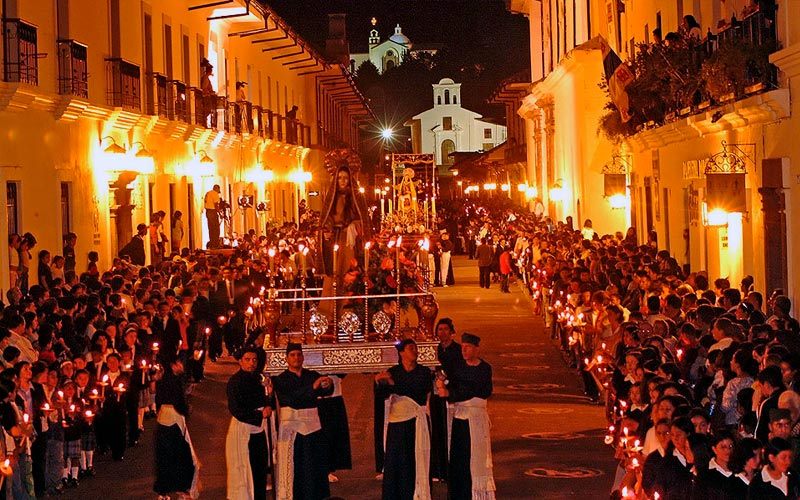

¡Visita nuestras rutas turísticas!
Explora la riqueza cultural, histórica y natural de Popayán con nuestras rutas guiadas por los lugares más emblemáticos de la región.
Explora nuestras rutas en el mapa


Ruta Histórica
Visita los lugares históricos más importantes de la ciudad.
- Plaza Mayor
- Catedral Basílica
- Casa Museo Mosquera
Agencias de rutas turisticas:

Ruta Gastronómica
Descubre la riqueza culinaria de Popayán.
- Mercado de Bolívar
- Restaurantes tradicionales
- Taller de cocina regional
Agencias de rutas turisticas:

Ruta Natural
Explora la naturaleza que rodea la ciudad.
- Reserva Natural El Cofre
- Río Molino
- Laguna del Buey
Agencias de rutas turisticas:

Ruta Cultural
Conoce la cultura viva de Popayán.
- Teatro Municipal
- Museo de Historia
- Eventos culturales
Agencias de rutas turisticas: